皆様こんにちは、System Center サポートチームの 石原 です。
System Center Operations Manager 2025 (SCOM 2025) は、データベースとして SQL Server 2017、2019、2022 をサポートしています。また、SCOM 2025 に更新プログラムのロールアップ 1 (UR1) を適用することで、SQL Server 2025 もサポートされます。
今回は、SCOM 2025 に UR1 を適用し、SQL Server 2025 を利用する手順についてご紹介します。
事象の概要
以下の公開情報のとおり、SCOM 2025 は UR1 適用後に SQL Server 2025 をサポートします。
・SQL Server 要件
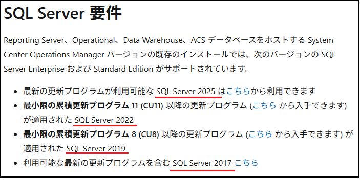
ただし、SQL Server 2025 のサポートは SCOM 2025 UR1 で追加された機能です。そのため、SQL Server 2025 を使用する場合は、SCOM 2025 に更新プログラムのロールアップ 1 (UR1) を適用する必要があります。
・SCOM 2025 UR1 の新機能
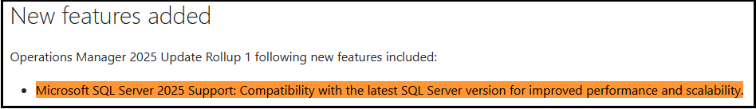
本記事では、SCOM 2025 に UR1 を適用し、SQL Server 2025 をバックエンド データベースとして利用するための構築手順をご紹介します
構築の流れについて
SQL Server 2025 は、SCOM 2025 UR1 適用後にサポートされるため、SQL Server 2025 をバックエンド データベースとして利用する場合は、以下の手順で構築を行う必要があります。
１．SQL Server 2022 環境に SCOM 2025 をインストールする
２．SCOM 2025 に UR1 を適用する
３．SQL Server 2022 を SQL Server 2025 にアップグレードする
※ 注意
SQL Server 2025 に対して SCOM 2025 を直接インストールした場合、以下のエラーにて SCOM 2025 のインストールは失敗してしまいます。
通常、SCOM ではリリース時点でサポート対象となる SQL Server のバージョンがサポートされています。しかし、SQL Server 2025 は SCOM 2025 のリリース後に公開されたため、UR1 にてサポートが追加されました。
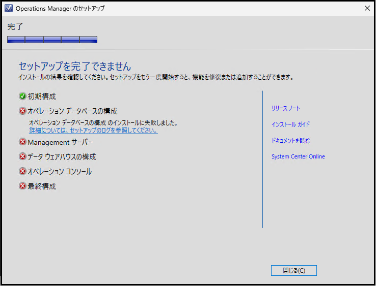
１．SQL Server 2022 環境に SCOM 2025 をインストールする
まず、SQL Server 2022 環境を準備します。
SQL Server 2022 の最小要件は CU11 ですが、セキュリティ修正や不具合修正が含まれるため、基本的には 最新の累積更新プログラム (CU) を適用することを推奨します。
※ ご参考：SQL Server 2022 + CU25 環境
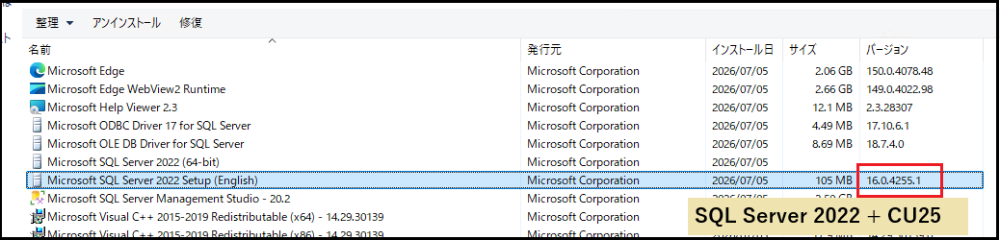
SQL Server 2022 の準備が完了したら、SCOM 2025 をインストールします。インストール手順については、以下の Microsoft Learn をご参照ください。
・SCOM 2025 のインストール手順
また、SCOM 2025 のインストール手順は SCOM 2022 と大きく変わらないため、以下のサポート ブログも参考になります。
・サポートブログ：SCOM 2022 のインストール手順
※ ご参考：インストール成功画面
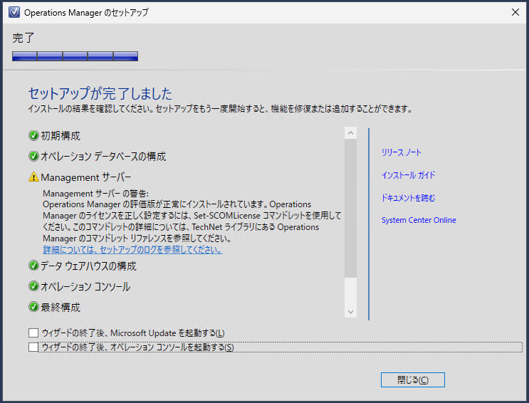
※ ご参考：コンソール接続
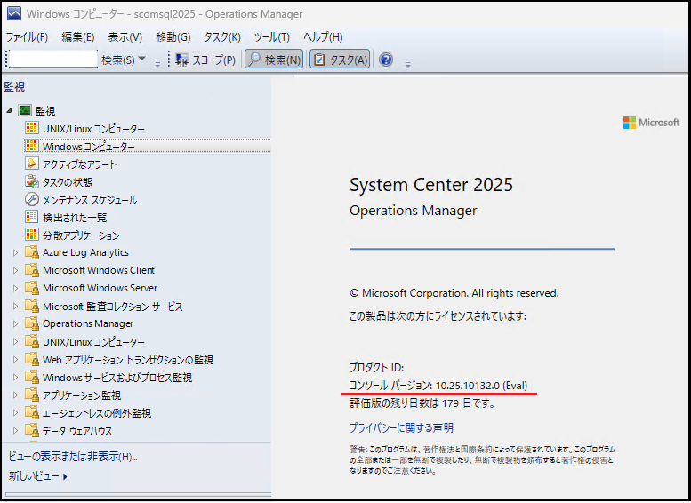
２．SCOM 2025 に UR1 を適用する
SCOM 2025 のインストールが完了したら、SCOM 2025 に UR1 を適用します。UR1 の適用手順については、以下の Microsoft Learn をご参照ください。
・SCOM 2025 UR1 の適用手順
また、UR の適用手順は 各バージョンで大きく変わらないため、以下のサポート ブログも参考になります。
・サポートブログ：SCOM 2022 UR の適用手順
※ ご参考：SCOM 管理サーバーと SCOM データベースへの UR1 適用 (KB5068304-amd64-Server.exe 実行)
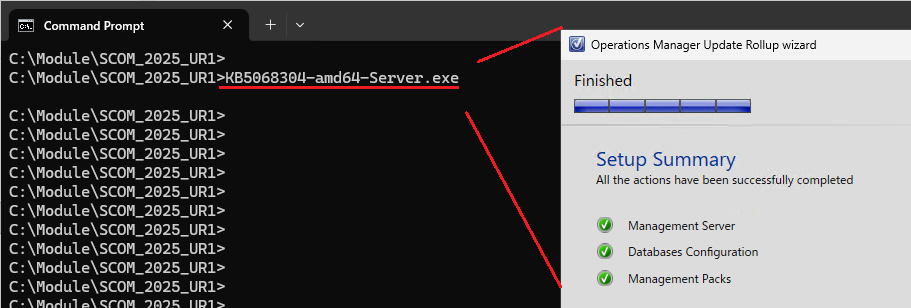
※ ご参考：SCOM コンソールへの UR1 適用 (KB5068304-amd64-Console.msp 実行)
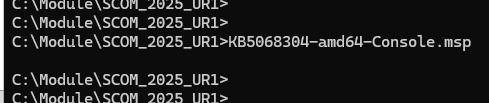
※ ご参考：コンソール接続
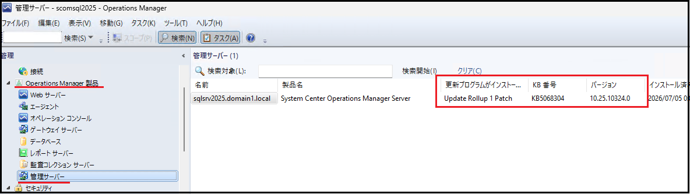
３．SQL Server 2022 を SQL Server 2025 にアップグレードする
最後に、SQL Server 2022 を SQL Server 2025 にアップグレードします。
SQL Server のアップグレード中は、SCOM からデータベースへのアクセスを防ぐため、以下の順で SCOM 関連サービスを事前に停止してください。
・Microsoft Monitoring Agent
・System Center 管理構成
・System Center Data Access Service
SQL Server のアップグレード手順については、以下の Microsoft Learn をご参照ください。
・SQL Server 2025 のアップグレード手順
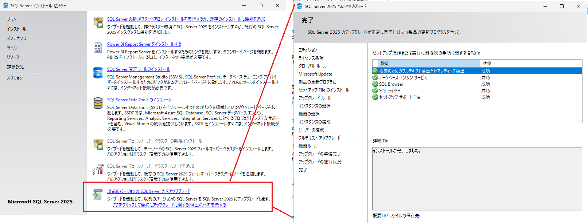
SQL Server 2025 にアップグレード後も、基本的には 最新の累積更新プログラム (CU) を適用することを推奨します。
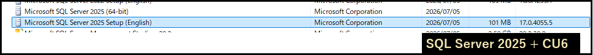
SQL Server のアップグレードが完了したら、以下の順序で SCOM 関連サービスを起動します。
・System Center Data Access Service
・System Center 管理構成
・Microsoft Monitoring Agent
最後に、SCOM コンソールにログインし、SCOM が正常に利用できることを確認します。
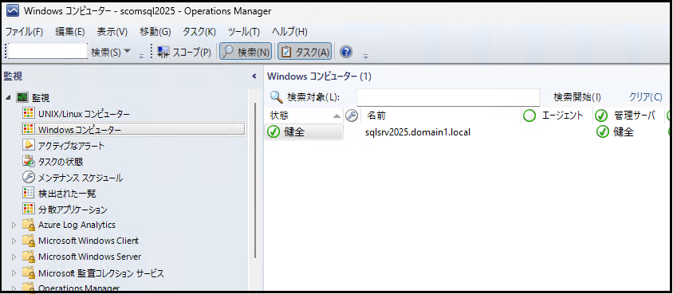
本記事では、SCOM 2025 で SQL Server 2025 を利用するための手順をご紹介しました。
SQL Server 2025 は、SCOM 2025 UR1 でサポートが追加されています。そのため、まず SQL Server 2022 環境に SCOM 2025 をインストールし、SCOM 2025 UR1 を適用した後に SQL Server 2025 へアップグレードする必要があります。
本記事が、SCOM 2025 と SQL Server 2025 の導入時の参考になれば幸いです。
※本情報の内容（添付文書、リンク先などを含む）は、作成日時点でのものであり、予告なく変更される場合があります。